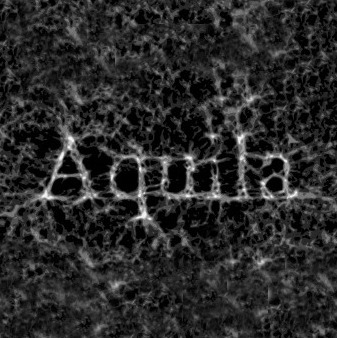
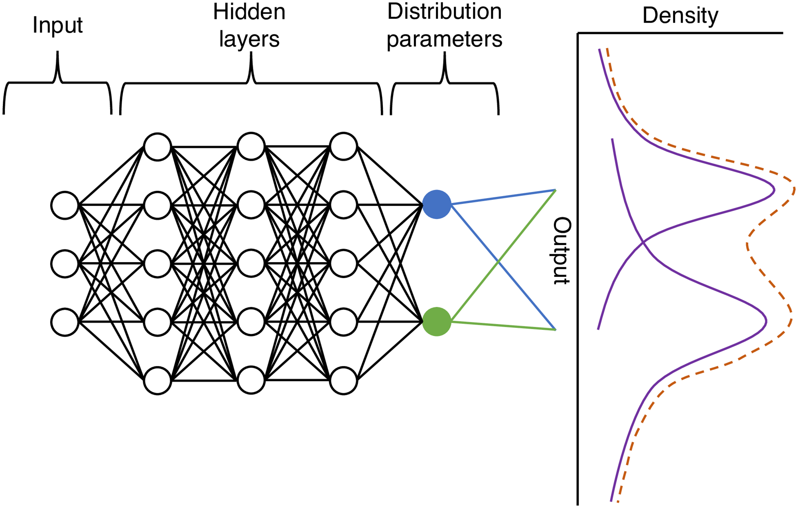
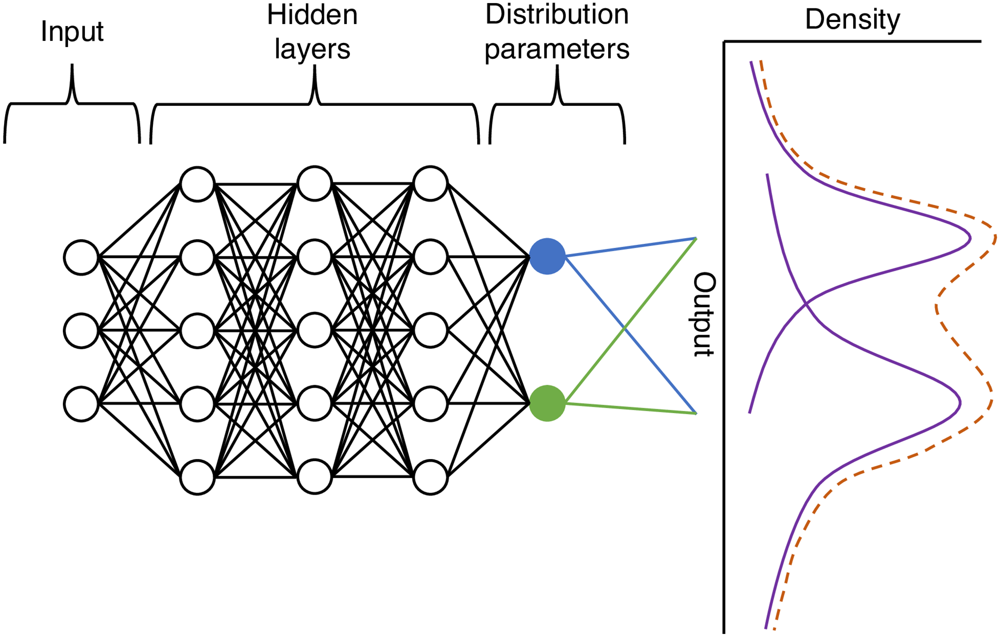

Fast realistic, differentiable,
mock halo generation
for wide-field galaxy surveys
Simon Ding, PhD @ Institut d'Astrophysique de Paris
supervised by Guilhem Lavaux & Jens Jasche
 
Want: Bayesian field-level inference of the IC of our universe
Need: Forward model containing all the physics
→ Model for going from ICs to some observables
My work
Mapping between dark matter density to halo count fields
$$\delta_m(x) \rightarrow n\big(M|\delta_m(x)\big)$$
Halo bias model
Halo bias is complex
- Linear models only valid on large scales
- Phase-space halo finders very costly
- Need differentiability
NPE model
Main design ideas:
• Take into account non-local information
• Model linear and non-linear behaviour
• Make use of isotropy
• Generative process with stochasticity
Likelihood assumption
 →
→ →
→ $n\big(M|\delta_m(x)\big)$
→
→ $n\big(M|\delta_m(x)\big)$
Convolve → $\psi(x)$ → Transform → $P(M|\delta_m)$ → Sample
Results
Summary
• Model has reduced number of weights → zero-shot learning
• Generative model that can generate realistic mocks once trained
• Kernel weights can be interpreted
• Shameless plug: Bias test bench
• Happy to chat in person or via simon.ding@iap.fr